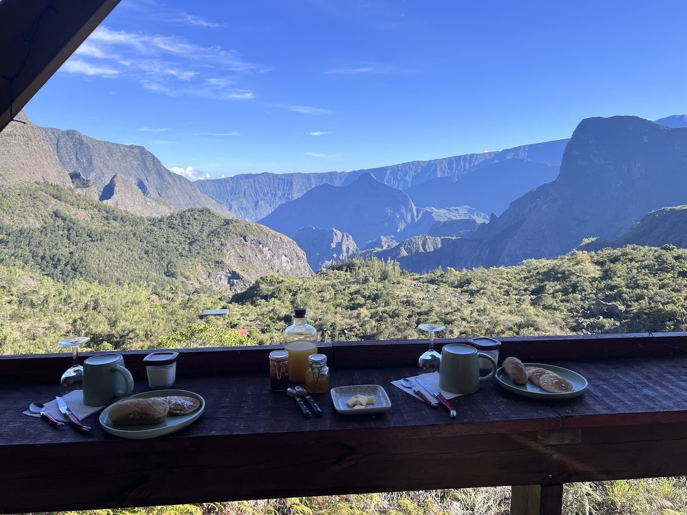

Gîte · Roche Plate, Mafate
En plein cœur du cirque de Mafate, venez faire une pause nature au Bon Air de Mafate après une randonnée dans les beaux sentiers et les îlets de Mafate.

L’essentiel
Le gîte se trouve entre Roche Plate et Trois Roches, sur le plateau des Cerfs, au « vrai Roche Plate ».
Chaque bungalow profite d’une terrasse privative avec un magnifique panorama sur Mafate.
Un cadre intime, avec le sanitaire inclus dans la chambre, draps, couettes et serviettes fournis.
Un repas chaud aux produits de la kour le soir, puis un bon petit-déjeuner maison pour repartir sur les sentiers.
Le Bon Air en images
Les bungalows
8 randonneurs · 2 bungalows · 5 lits · sanitaire inclus dans chaque chambre.
Draps, couettes, serviettes de toilette et gel douche fournis : votre sac reste léger.
Ils en parlent
Les randonneurs reviennent sur la vue depuis la terrasse, le petit-déjeuner face au cirque, les repas faits maison et l’accueil de la famille.
« Fabuleux. Après une marche bien fatigante nous sommes arrivés au bon air de Mafate où nous avons pu profiter de la terrasse en attendant le très bon repas du soir. Très calme. Petit dej au top avec en prime la vue extraordinaire. … »
« L accès au gîte se mérite en venant de Grand place, mais quel bonheur en arrivant! La terrasse devant la chambre est vaste et avec une vue somptueuse sur le cirque de Mafate et le Maido … »
« Pour moi le meilleur gîte et la meilleure expérience dans Mafate, des propriétaires accueillants, soucieux du bien être et du détail. Repas excellent, literie de qualité et un cadre magnifique! »
« Nous avons passé un super moment en famille, avec deux nuits en déconnexion totale, au cœur de paysages magnifiques. Nous sommes partis du Maïdo, avons rejoint Trois Roches le lendemain, puis sommes revenus par le Maïdo. … »
« Votre séjour au Bon Air de Mafate se mérite! Après une dernière ascension sur Roche Plate, vous tombez sur ce magnifique gite perché au sommet, avec un accueil des plus chaleureux de notre hôtesse, Marina. … »
« … Au menu : apéritif (avec beignets et cocktail de bienvenue), entrée, plat et delieux desserts (panacotta et crème brûlée). … Le petit-déjeuner était lui aussi delicieux (yaourt coco, pancakes, pain maison et jus maison), de quoi bien commencer la journée ! »
Extraits d’avis publiés sur la fiche Google du Bon Air de Mafate. Lire tous les avis · Voir la fiche de l’Office de tourisme de l’Ouest
Venir à pied
Ici, on arrive à pied, par les sentiers du cirque. La montée finale se savoure : la terrasse et le panorama vous attendent au bout.
La table du gîte
Le soir, vous êtes conviés autour d’un repas chaud aux produits de la kour, préparé avec goût et amour de la cuisine réunionnaise.
Le lendemain, un bon petit-déjeuner maison plein de vitamines vous est servi pour débuter une belle journée au cœur de Mafate, face au cirque.
Une allergie, un régime particulier ? Précisez-le dans votre demande.
Vos hôtes
Au Bon Air de Mafate, c’est toute la famille qui vous accueille : les voyageurs saluent l’accueil chaleureux de leur hôtesse et de son fils, et les histoires de Mafate partagées au souper.
Deux bungalows seulement : un accueil soigné, au calme, en petit comité.
Infos pratiques
À partir de 15 h
Au plus tard à 9 h 30
Jusqu’à 8, dans 2 bungalows de 4 places ; familles bienvenues
Demi-pension : nuit, repas du soir et petit-déjeuner
À pied, par les sentiers de Mafate ; adresse exacte et itinéraire confirmés à la réservation
Draps, couettes, serviettes et gel douche fournis
Sur demande, selon vos dates et le nombre de randonneurs
Collectée par l’hôte pour les réservations en direct
Confirmation écrite envoyée avec chaque réservation
Réserver en direct
Indiquez vos dates et le nombre de randonneurs : le gîte vous répond personnellement avec le tarif de votre étape en demi-pension.